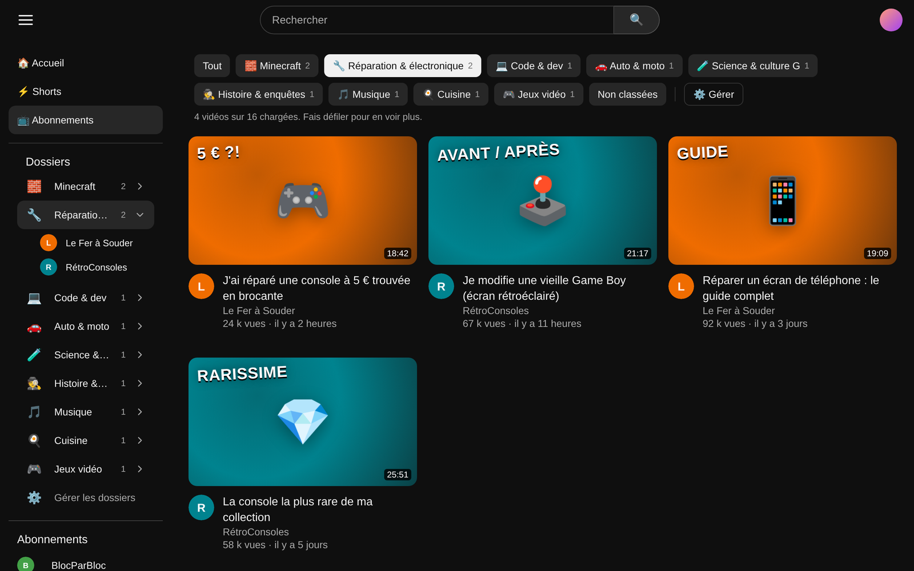
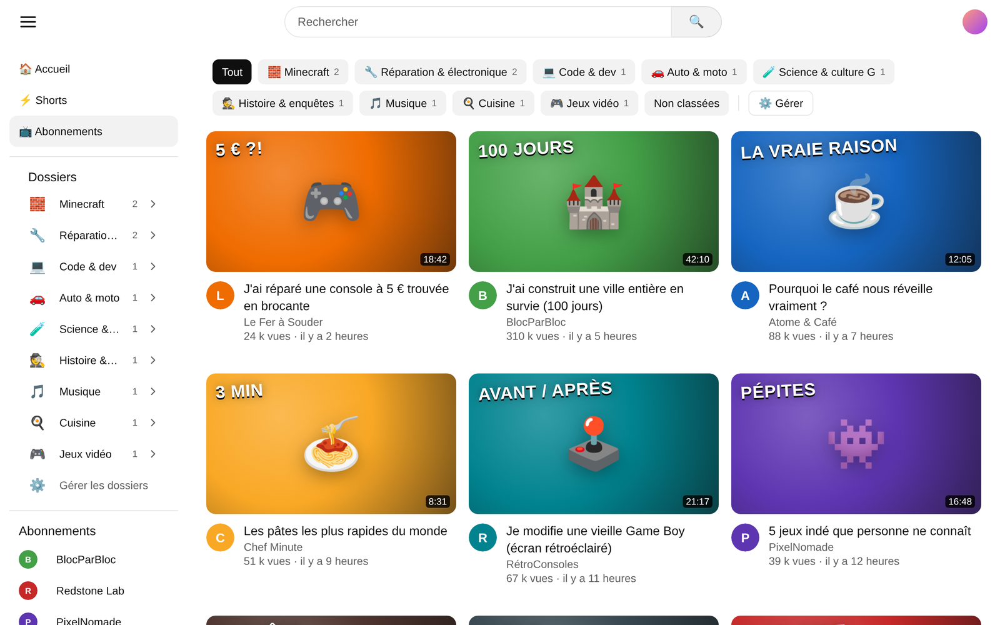
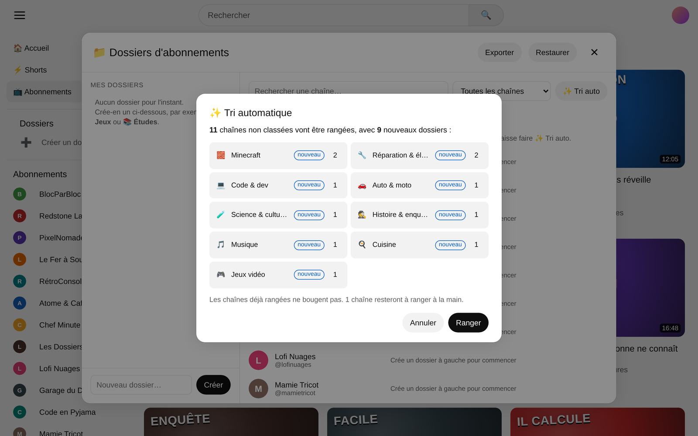
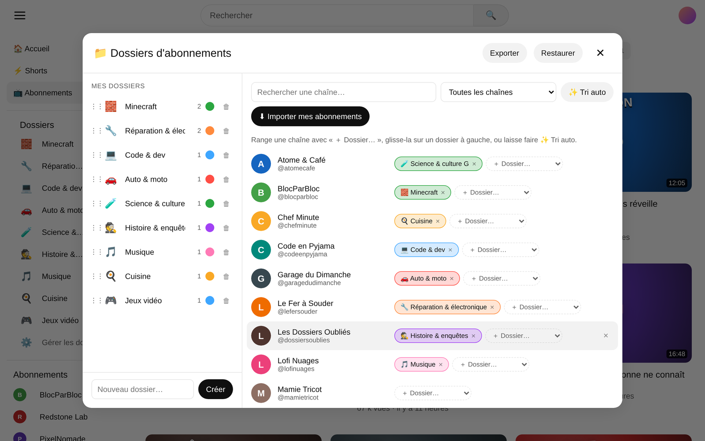
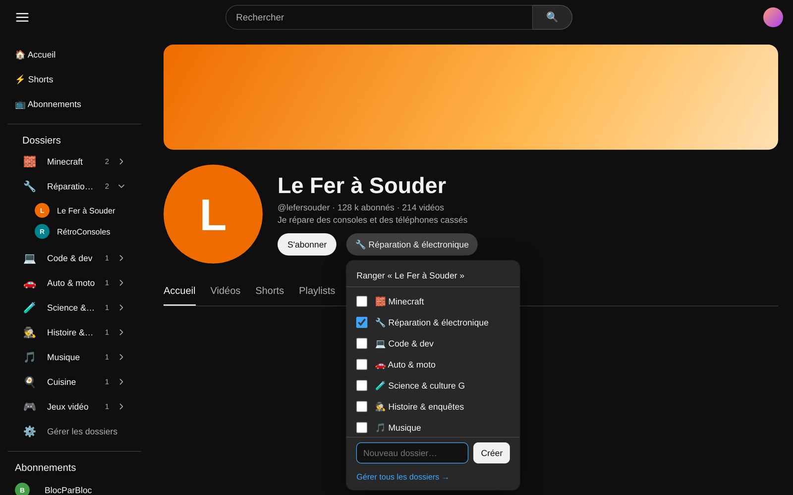

Crée des dossiers, filtre ton fil Abonnements par dossier, et laisse le tri automatique ranger des centaines de chaînes en un clic.

L'extension s'intègre directement dans YouTube, en mode clair comme en mode sombre.
Des onglets apparaissent en haut de la page Abonnements. Un clic, et tu ne vois plus que les vidéos du dossier choisi.

Importe ta liste d'abonnements, puis clique sur « Tri auto ». L'extension lit le nom et la description de chaque chaîne et propose un rangement. Tu valides avant que quoi que ce soit bouge.
presets.js
Toutes tes chaînes au même endroit. Recherche, filtre, glisse une chaîne sur un dossier, réordonne tes dossiers.

Un bouton apparaît à côté de « S'abonner », sur chaque chaîne et sous chaque vidéo. Coche un dossier, ou crée-en un nouveau directement.

Tes dossiers restent dans ton navigateur. Aucun compte, aucun serveur, aucune pub.
S'adapte automatiquement au thème de YouTube.
Une seule permission : le stockage. Le code est ouvert, tu peux tout lire.
L'extension n'est pas (encore) sur le Chrome Web Store : on l'installe en mode développeur, c'est simple.
dossiers-abos-youtube-v1.2.0.zip, puis dézippe-le dans un dossier où il restera.opera://extensions sur Opera GX, chrome://extensions sur Chrome, edge://extensions sur Edge.Non. L'extension ne touche jamais à tes vrais abonnements : elle ajoute seulement une couche de rangement par-dessus, dans ton navigateur.
Pas automatiquement. Utilise « Exporter » dans le gestionnaire, puis « Restaurer » sur l'autre navigateur.
YouTube charge le fil petit à petit. Fais défiler la page pour charger d'autres vidéos : l'extension filtre au fur et à mesure.
YouTube modifie régulièrement son site. Tes dossiers restent sauvegardés. Ouvre un ticket sur GitHub avec une capture d'écran.